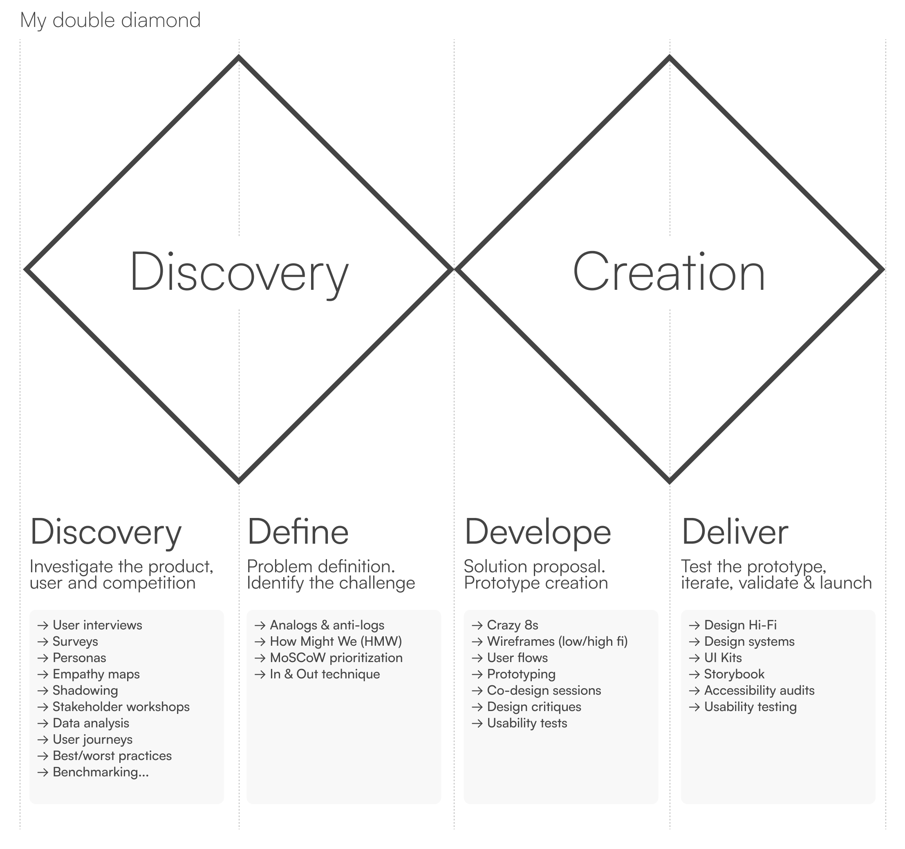

My Design Process
Let me walk you through how I approach the creation of digital products. Every project is unique, so I adapt my process to the specific nature of each case. However, I always start from the same base: the Double Diamond framework.

🔍 Understand the problem before solving it
This is an exploratory phase where we dive deep into understanding the product or service, empathize with the users’ needs and preferences, and analyze the market and competitors. It’s a phase of observation and insight gathering.
→ Common tools & deliverables I use:
User interviews, surveys, personas, empathy maps, shadowing, guerrilla testing, buzz reports, stakeholder workshops, data analysis, user journeys, best/worst practices, benchmarking.
🎯 Transform insights into a clear challenge
After the divergent thinking of discovery, this phase is about converging—synthesizing all the information gathered to define the design challenge. It’s where we clearly articulate the problem we’re aiming to solve.
→ Common tools & deliverables I use:
Analogs & anti-logs, How Might We (HMW), MoSCoW prioritization, In & Out technique.
✏️ Generate, test, and refine solutions
A new phase of divergence begins, where we ideate and propose different solutions to the defined problem. Through brainstorming and iterative refinement, we identify the most feasible and impactful ideas based on factors like scope, resources, and timing.
→ Common tools & deliverables I use:
Figjam, Miro, crazy 8s, storyboards, wireframes (low/high fidelity), user flows, prototyping, co-design sessions, design critiques, usability tests.
🚀 Build, validate, and launch
This final phase is about implementation. We collaborate with developers, validate the solution with real users, and fine-tune every detail for a successful launch. It’s also where we document, ensure accessibility, and maintain consistency with the design system.
→ Common tools & deliverables I use:
Figma, design systems, Storybook, accessibility audits, usability testing protocols.